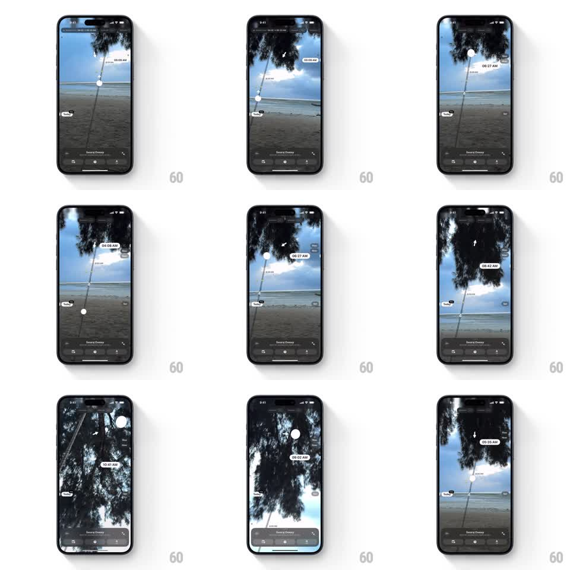

Media
Frame-by-frame

Rebuild this interaction 1:1: Sunlit's sun-path screen - a vertical scrubber slides a sun dot along its arc over a live camera view, updating the time readout in real time, while tilting the phone shifts the scene with gyroscope parallax.

Rebuild this interaction 1:1: Sunlit's sun-path screen - a vertical scrubber slides a sun dot along its arc over a live camera view, updating the time readout in real time, while tilting the phone shifts the scene with gyroscope parallax.
## Integration
Integration: stack-agnostic spec - springs given as stiffness/damping, timed motions as duration + curve; map every value to your framework and animation library of choice.
## Scene
Full-screen camera view (a beach: sand, shoreline, tree canopy overhead, blue sky). A thin vertical path line runs down the frame with a white sun dot on it and a pill-shaped time label beside the dot ("05:09 AM"). Small arrow markers point along the path. Bottom: a dark bar with the location name ("Swaraj Dweep") and mode tabs.
## Motion spec
Pattern: 1:1 scrubber on a sun path with gyroscope-driven view shift.
- Dragging the sun dot (or anywhere on the path) moves it along the arc with 1:1 finger tracking; the time pill updates continuously as the dot's position maps to time (05:09 AM -> 06:27 AM -> 09:41 AM...).
- The pill rides beside the dot, flipping sides near the screen edges, and its text crossfades on each minute change (120ms).
- On release, the dot settles with a light spring (~260/24) if it was flung; no snapping to whole minutes.
- Tilting the phone pans the camera view opposite the tilt (gyroscope, ~15pt max offset, smoothed with a 200ms low-pass) and shifts the tree canopy more than the horizon (2-layer parallax, canopy 1.6x the horizon's offset).
- The scene's light follows the sun's position: lower dot, warmer and dimmer grade; higher dot, brighter and cooler (crossfade over 300ms).
## Calibration
- Scrub and gyroscope compose: the path stays screen-fixed while the scene pans beneath it.
- The time pill never detaches from the dot - it is a callout, not a HUD element.
## Reduced motion
Gyroscope pan disabled; scrubbing moves the dot without the lighting grade change.
## Don't miss
- The path is a true arc, not a straight vertical line - the dot follows the curve.
- The grade shift is subtle: a white-balance drift, not a filter slam.